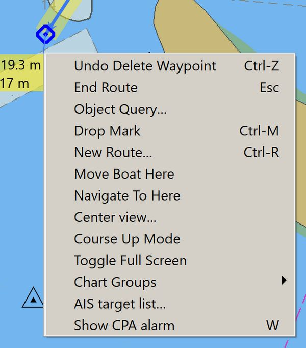
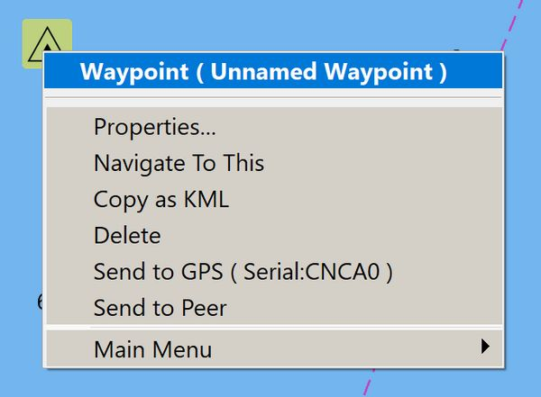
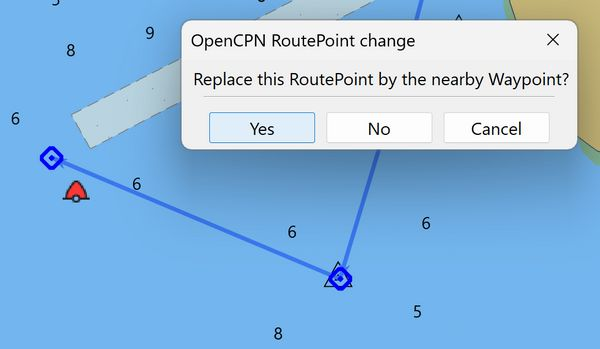
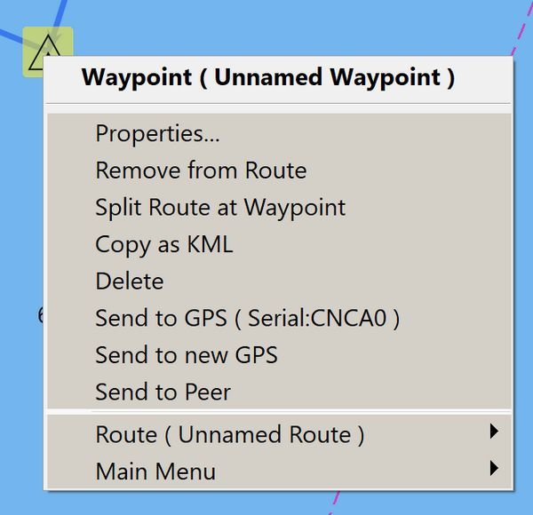

Modify a Route
- Modifying Routes - [[opencpn:manual_basic:route_manager:use_routes#move_waypoints_in_a_route|Move Waypoints in a Route (Use Routes}]] - [[opencpn:manual_basic:create_routes:modify_route#insert_waypoint_into_a_route|Insert a Waypoint into a Route (Modify a Route)]] - [[opencpn:manual_basic:route_manager:use_routes#include_existing_wp_in_a_route|Include existing WP in a route (Use Routes)]] - [[opencpn:manual_basic:create_routes:modify_route#append_a_waypoint_into_a_route|Append a Waypoint into a Route]] (Modify a Routes) - [[opencpn:manual_basic:route_manager:use_routes#append_insert_waypoint_and_split_route_around_leg|Append, Insert Waypoint and Split Route around Leg (Use Routes)]] - [[opencpn:manual_basic:route_manager:use_routes#split_a_route_using_the_context_menu|Split a Route using the context menu (Use Routes)]] - [[opencpn:manual_basic:route_manager:use_routes#combine_routes|Combine Routes (Use Routes)]] - [[opencpn:manual_basic:route_manager:use_routes#delete_route|Delete Route (Use Routes)]]
-
Export and Import GPX Files (Navigation Sharing) Also Send to GPS, Send to new GPS and Send to Peer.
* //[[opencpn:manual_basic:create_routes:route_autopilot|Route to Autopilot]]//
Route Concepts
Waypoints are independently defined points, not part of a Route.
Route points exist only as part of a Route definition.
Routes are a set of two or more points in a given order.
Route Points may be defined automatically as the Route is created.
A Route may link existing Waypoints or Route points.
Multiple Routes may share common Route points.
When all the Routes which pass through a shared Route point are
deleted that Route point will be deleted.
When all the Routes which share a Waypoint are deleted the
Waypoint will persist independently.
Modify a Route
To modify, add to, append a route point, insert waypoints, remove or
delete waypoints in a Route,
Right Click on the Route Segment or at the Waypoint (dependent on
intent), and select the appropriate command.

Right Click while Creating a Route
-
Undo delete Waypoint [Ctrl-Z] (Always shows last action)
-
End Route [Esc]
-
Object Query
-
Drop Mark [Ctrl-M]
-
New Route [Ctrl-R]
-
Move Boat Here
-
Navigate to Here
-
Center View
-
Course Up Mode
-
Toggle full Screen
-
Chart Groups
-
AIS Chart List
-
Show CPA
+ image:/opencpn/manual_basic/route-right-click-on-route-point.jpg[/opencpn/manual_basic/route-right-click-on-route-point,width=300]
Right Click on a Route Point
-
Properties. The dialog is the same as for an individual mark.
-
Remove from Route but don’t delete it.
-
Split Route at Waypoint
-
Copy as kml, for use with Qtvlm or Google Earth.
-
Delete Waypoint from Route.
-
Reverse..
-
Hide Waypoint Names
-
Resequence Waypoints..
-
Send to GPS (Serial:) is seen in the rightclick menus for routes and waypoints. If a port is not selected, the case in the picture above, a dialog is shown to select an output port. To change the selected port, go to the route manager and select "Send to GPS". Refer to Navigation Sharing
-
Send to new GPS Refer to Navigation Sharing
-
Send to Peer Refer to Navigation Sharing
-
Route (Route Name)
-
Ctrl + N, a shortcut that activates the next waypoint in an active route.
+ image:/opencpn/manual_basic/route-right-click-on-leg.jpg[/opencpn/manual_basic/route-right-click-on-leg,width=300]
Right Click on a Route Leg
-
Properties. The dialog is the same as for an individual mark.
-
Activate - Gives the direction to the chosen waypoint instead of the first waypoint in the route, which is the default. Useful when joining, for example, an imported route, at an arbitrary waypoint.
-
Insert Waypoint
* * **Remove from Route** but don't delete it. * **Copy as kml,** for use with Qtvlm or Google Earth. * **Delete** Waypoint from Route. * **Reverse..** * **Hide Waypoint Names** * **Resequence Waypoints..** * **Send to GPS (Serial:)** is seen in the rightclick menus for routes and waypoints. If a port is not selected, the case in the picture above, a dialog is shown to select an output port. To change the selected port, go to the route manager and select "Send to GPS". Refer to [[opencpn:manual_basic:route_manager:navigation_sharing|Navigation Sharing]]\\ * **Send to new GPS** Refer to [[opencpn:manual_basic:route_manager:navigation_sharing|Navigation Sharing]] * **Send to Peer** Refer to [[opencpn:manual_basic:route_manager:navigation_sharing|Navigation Sharing]] * **Ctrl + N**, a shortcut that activates the next waypoint in an active route.
Insert Waypoint into a Route

Right Click on an independent Waypoint which is NOT in a route. See right-click menu.

Drag a Route Point over an independent Waypoint results in prompt to replace the Route point with the nearby Waypoint.

Right Click on an Waypoint in a Route shows options not otherwise
available.
* **Properties**. The dialog is the same as for an individual mark. * **Remove from Route**, but don't delete it. * **Split route at Waypoint** * **Copy as kml,** for use with Qtvlm or Google Earth. * **Delete** Waypoint from Route. * **Send to GPS (Serial:)** is seen in the Right Click menus for routes and waypoints. If a port is not selected, the case in the picture above, a dialog is shown to select an output port. To change the selected port, go to the route manager and select "Send to GPS". Refer to [[:opencpn:manual_basic:route_manager:navigation_sharing|]] * **Send to new GPS** Refer to [[:opencpn:manual_basic:route_manager:navigation_sharing|]] * **Send to Peer** Refer to [[:opencpn:manual_basic:route_manager:navigation_sharing|]] * **Route (Name of Route)** * **Main Menu** * **Ctrl + N**, a shortcut that activates the next waypoint in an active route.
+ image:/opencpn/manual_basic/use-nearby-waypoint.png[use-nearby-waypoint.png,width=300]